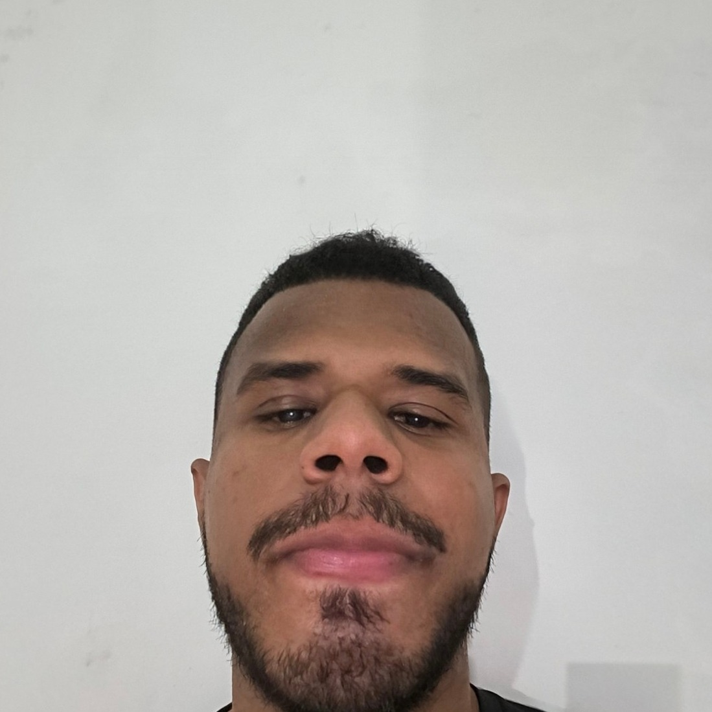

Cássio Herbeth Rodrigues Araújo
Desenvolvedor Front-end no Programa Trilhas
Sobre mim
Sou estudante universitário e venho construindo minha trajetória na área de tecnologia por meio das atividades da faculdade e de projetos que envolvem programação, desenvolvimento de sistemas e resolução de problemas. Gosto de aprender na prática e de entender como uma ideia pode se transformar em uma solução útil.
No Programa Trilhas Inova, estou ampliando meus conhecimentos em desenvolvimento Front-end, principalmente com HTML, CSS e construção de interfaces. O programa tem sido importante por unir conteúdo e prática em desafios que ajudam a desenvolver autonomia, organização e uma visão mais completa de projeto.
Quero continuar me aperfeiçoando na área, fortalecer minha base em Front-end e avançar para novas tecnologias. Meu objetivo é ganhar experiência, participar de projetos reais e crescer profissionalmente na área de desenvolvimento.